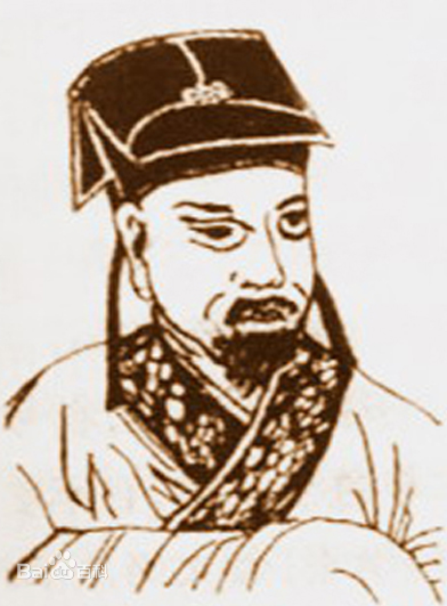

人物传记
龙湛霖(1837-1905)字芝生，湖南攸县人。 清同治元年（1862）进士，选翰林院庶吉士。历任江西学政、内阁学士、江苏学政、刑部右侍郎。 龙湛霖初为侍讲，以光绪帝左右皆宦官，不利习读，疏请择宗室近臣中绩学笃行之士陪读，以知本敢言见称。中法战争时，上疏反复陈述和战利害，反对“老谋持重”之说，并提出进兵策略。论述圜法（币制），图铸轻重银币，论述郑州河决，增筑北岸堤防等，都能切中机要。 龙霖湛重视教育，以培养人才为己任。督学江西时，延请学者皮锡瑞主讲南昌经训书院。后在江苏学政任上，引入格致新法，购置译书、仪器，分科立规程，使各书院培养兼通西学人才。 光绪二十四年，龙湛霖以病乞归。逾年患痹病，卧床不起。而对乡里兴学等义举，都提携赞助。对争取粤汉路废约自保，出力尤多。三十一年（1905）夏病逝于长沙寓所，终年68岁。
作品欣赏
【正宫】鹦鹉曲
序云：白无咎有〔鹦鹉曲〕云：“侬家鹦鹉洲边住，是个不识字渔父。浪花中一叶扁舟，睡煞江南烟雨。觉来时满眼青山，抖擞绿蓑归去。算从前错怨天公，甚也有安排我处。”余壬寅岁留上京，有北京伶妇御园秀之属，相从风雪中，恨此曲无续之者。且谓前后多亲炙士大夫，拘于韵度，如第一个“父”字，便难下语；又“甚也有安排我处”，“甚”字必须去声字，“我”字必须上声字，音律始谐，不然不可歌，此一节又难下语。诸公举酒，索余和之，以汴、吴、上都、天京风景试续之。
更多>>